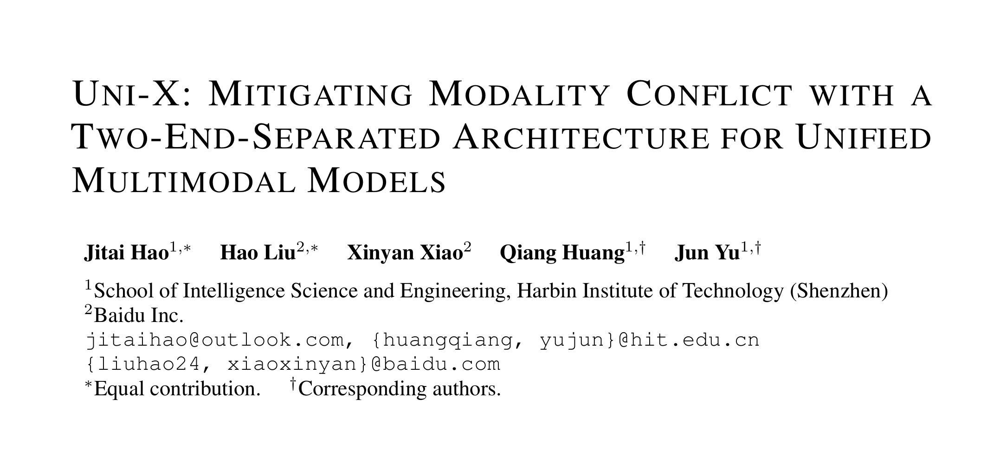
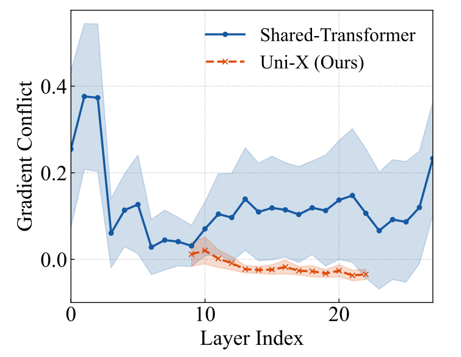
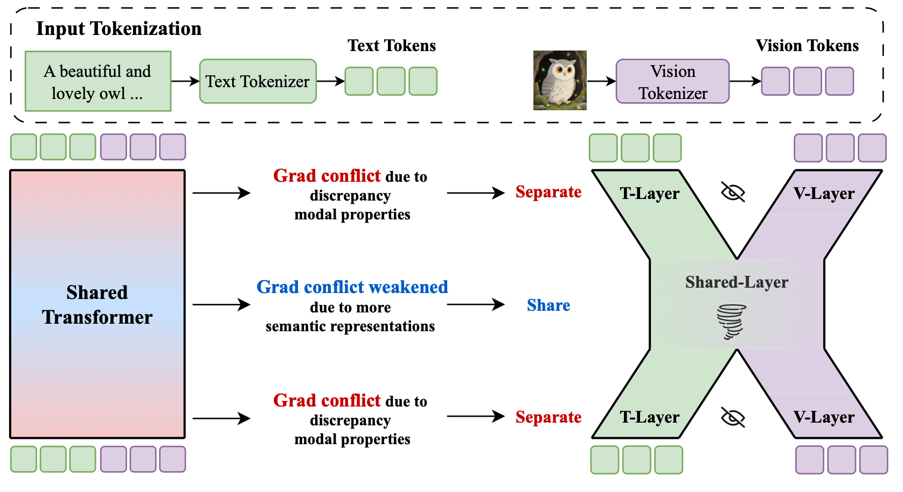
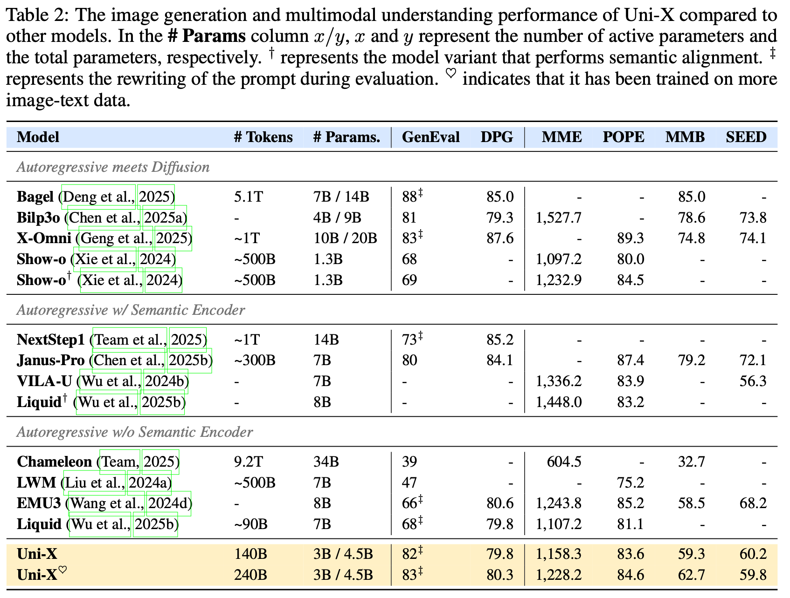
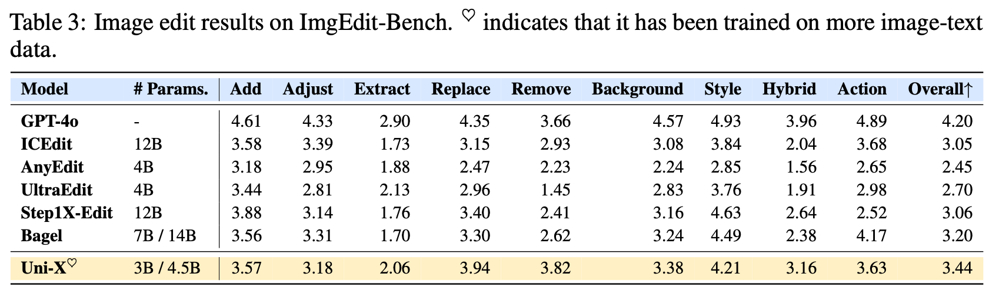

博士生郝继泰论文Uni-X 被 ICLR 2026 接收

📢 TL;DR： 针对纯自回归多模态模型在处理文本与视觉输入时的梯度冲突问题，我们提出了 Uni-X 架构。通过在模型两端设置模态专用分支，中间层保持共享，Uni-X 成功在 3B 参数量下实现了超越 7B 模型的性能。此外，该架构将注意力机制复杂度从 $O((a+b)^2)$ 优化至 $O(a^2+b^2)$，显著提升了训练与推理吞吐量。
📄 论文原文 ｜
💻 代码仓库 ｜
🤗 模型权重
近日，机器学习顶级会议 ICLR 2026 录用结果公布。由 哈尔滨工业大学（深圳） 智能科学与工程学院 多媒体智能前沿实验室（M3AIL Research Group） 研究生 郝继泰（第一作者）在 俞俊教授、黄强教授 指导下完成的论文 《Uni-X: Resolving Gradient Conflict in Unified Multimodal Models via Two-End-Separated Architecture》 被正式接收。

1. 科学发现：底层信息熵差异引发梯度冲突
研究团队从信息论角度分析发现，视觉 Token 序列的条件熵（Condition Entropy）显著高于英语、德语或中文等自然语言。这种极高的信息熵意味着视觉序列需要模型建模更复杂的空间依赖。在标准 Transformer 中，这种差异会导致浅层（特征提取）和深层（分布预测）出现剧烈的梯度冲突（Gradient Conflict）。

2. Uni-X 架构：两端分离，中间共享
基于上述发现，Uni-X 抛弃了复杂的外部视觉编码器，通过物理架构设计贴合模态特性：
- 分离层（Separated Layers）： 初始 $N$ 层与最后 $M$ 层拆分为模态专用分支，独立处理低熵文本与高熵视觉，起到类似 Encoder/Decoder 的作用。
- 共享层（Shared Layers）： 中间层保持参数共享，专注于高维语义的对齐与逻辑推理。
- 效率增益： 计算复杂度从全共享的 $O((a+b)^2)$ 下降到了与 $a^2+b^2$ 成正比，大幅提升了长序列下的吞吐量。

3. 实验结果：强大的 Scaling 与泛化能力
Uni-X-3B 在多个基准测试中展现出卓越性能：
- 图像生成： 在 GenEval 基准测试中达到 82 分，匹配甚至超越了一些 7B 规模的自回归模型。
- 图像编辑： 仅使用约 90k 图像编辑数据微调，其 Zero-Shot 泛化表现即可与使用了更多数据和更大参数量的 Bagel 模型相当。


未来展望：原生 Pixel-to-Pixel 统一
团队计划进一步探索移除 VQ-VAE 中间件的可能性。如果让 Uni-X 的分叉部分直接承担起 Tokenizer 与 Detokenizer 的功能，我们将有望实现真正意义上的 Pixel-to-Pixel 端到端原生多模态统一模型。